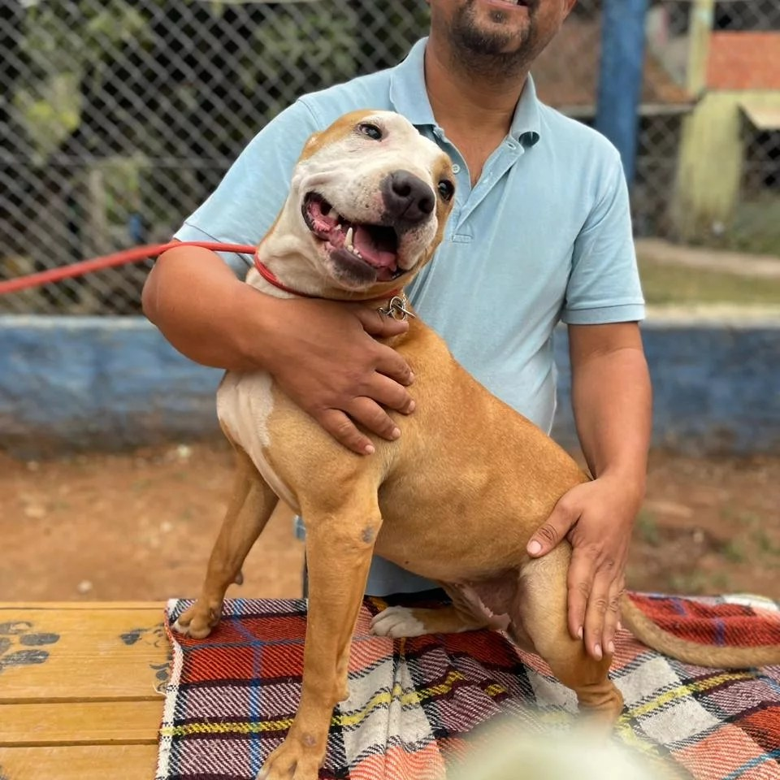
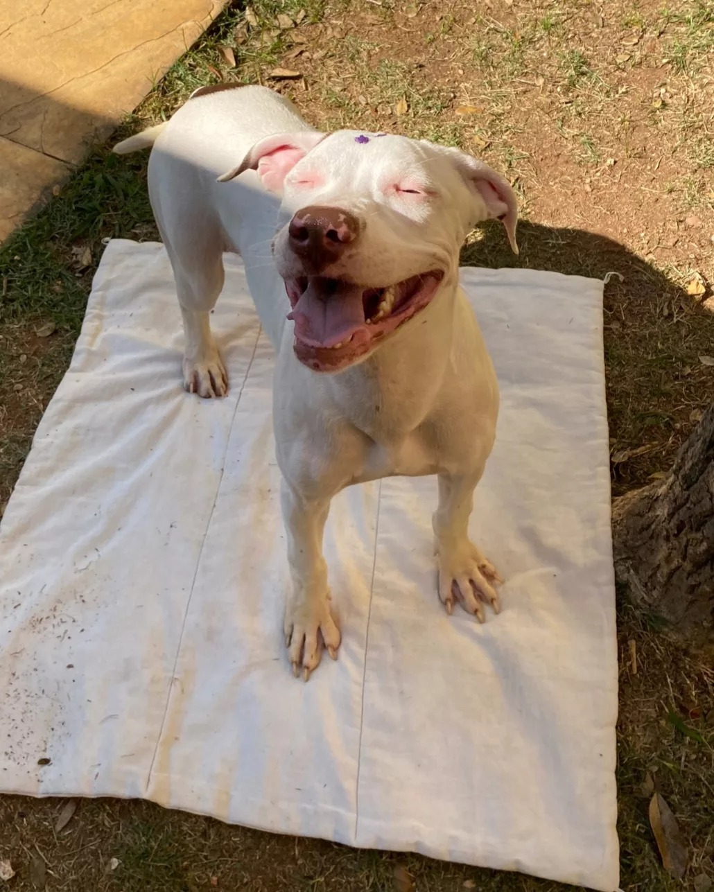
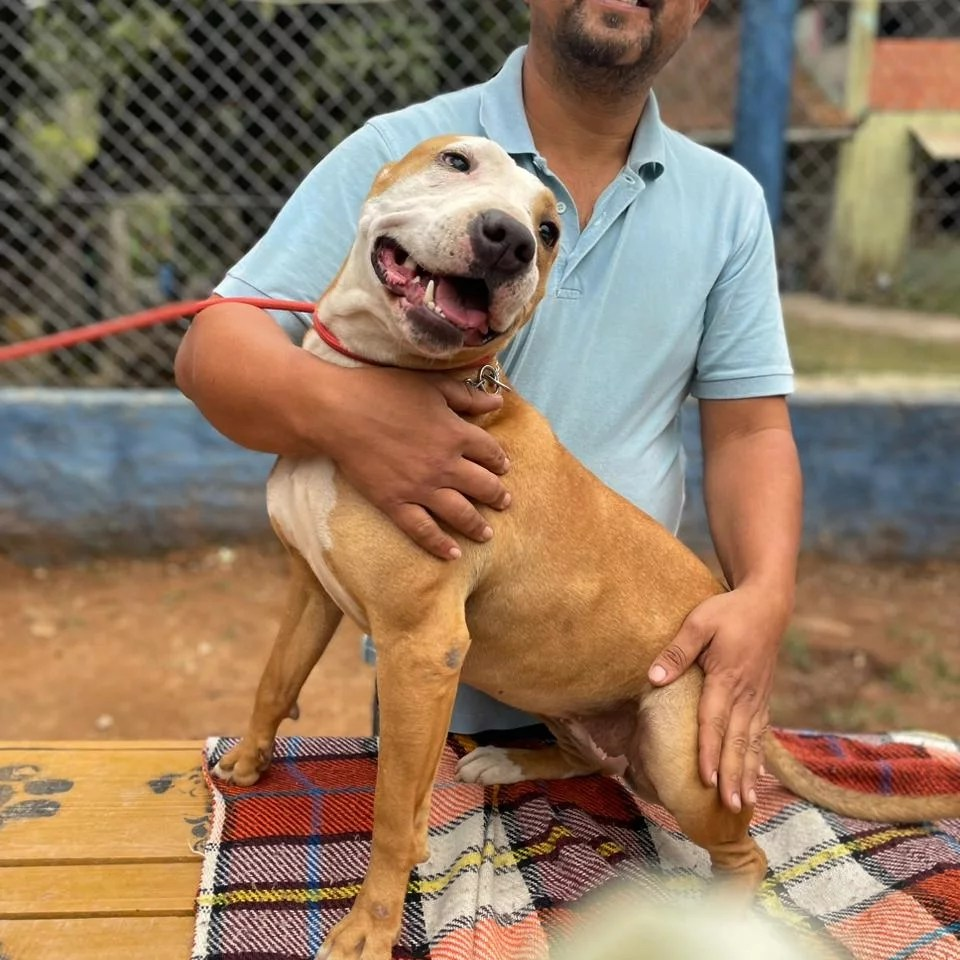
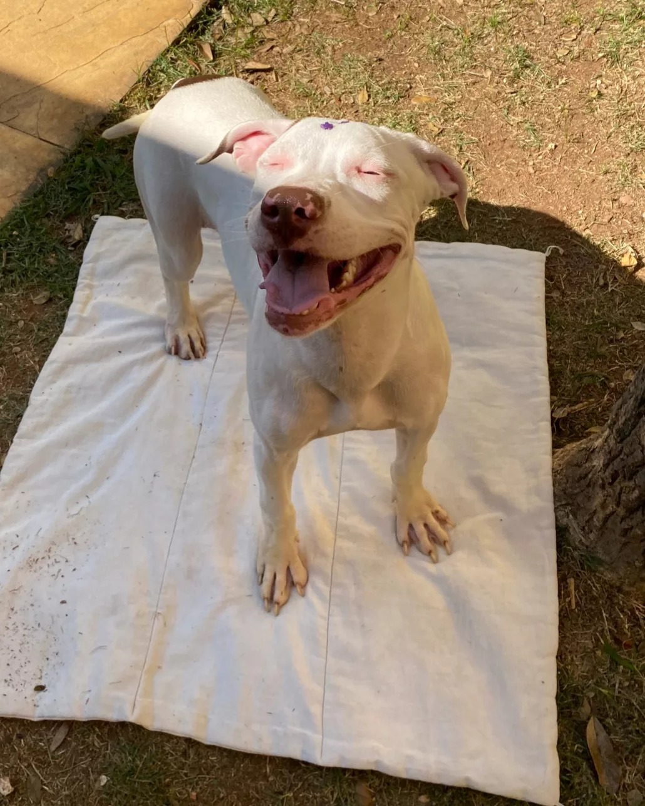

Há mais de 15 anos, a Associação Esperança dos Animais transforma vidas. Nossa missão é dar uma nova chance a cães e gatos em situação de risco, proporcionando-lhes cuidados médicos, alimentação, abrigo e, acima de tudo, amor.
Além do resgate e da adoção responsável, promovemos campanhas de conscientização e castração.

 


